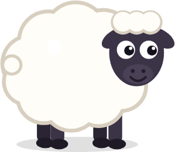
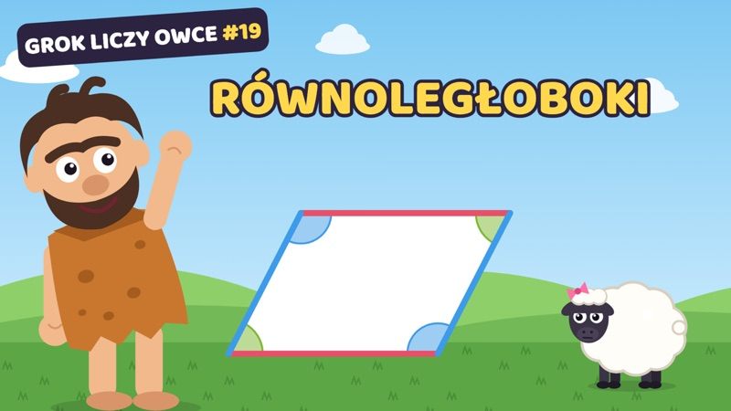

Wysokość równoległoboku
Co to jest wysokość równoległoboku? Grok robi furtkę z desek po 2 metry i jest pewny, że się zmieści. Łup! W filmie mierzymy wysokość pionem, stawiamy tekturowy równoległobok i romb na brzegu ławki, poznajemy wysokości opuszczone na boki i do przedłużenia boku, a na koniec rysujemy wysokość po obróceniu kartki.

Przykład krok po kroku
Równoległobok ma boki 10 cm i 5 cm. Stoi na dłuższym boku i ma 4 cm wysokości. Co się stanie, gdy postawimy go na krótszym boku?
- Mierzymy pionem i linijką wysokość opuszczoną na krótszy bok.
- Wychodzi 8 cm, a nie 4 cm.
- Wysokości opuszczone na sąsiednie boki równoległoboku są na ogół różne.

Poćwicz w grze: Furtka Groka
Pastwisko do tego odcinka w darmowej grze „Policz stado!”. Bez logowania, działa na telefonie i na tablicy interaktywnej.
Zagraj: Furtka GrokaPytania i odpowiedzi
Czy bok równoległoboku jest jego wysokością?
Nie. Bok jest zwykle ukośny, a wysokość jest prostopadła do dwóch równoległych boków. Tylko w prostokącie bok jest jednocześnie wysokością.
Ile wysokości ma równoległobok?
Bardzo dużo. Wszystkie wysokości opuszczone na ten sam bok mają tę samą długość. Wysokości opuszczone na sąsiednie boki są na ogół różne.
Jak narysować wysokość równoległoboku?
Przyłóż ekierkę do boku tak, żeby drugi bok ekierki doszedł do przeciwległego boku. Najłatwiej, gdy wysokość jest pionowa, więc możesz obrócić kartkę.
Inne tematy: matematyka klasa 5
 Cechy podzielności przez 2, 3, 4, 5, 9 i 10
Cechy podzielności przez 2, 3, 4, 5, 9 i 10
 Liczby pierwsze i złożone
Liczby pierwsze i złożone
 Dzielenie pisemne krok po kroku
Dzielenie pisemne krok po kroku
 Trójkąty: warunek trójkąta, suma kątów i rodzaje
Trójkąty: warunek trójkąta, suma kątów i rodzaje
 Trójkąt równoboczny, równoramienny i różnoboczny
Trójkąt równoboczny, równoramienny i różnoboczny
 Wysokość trójkąta
Wysokość trójkąta

Równoległobok, romb i kwadrat